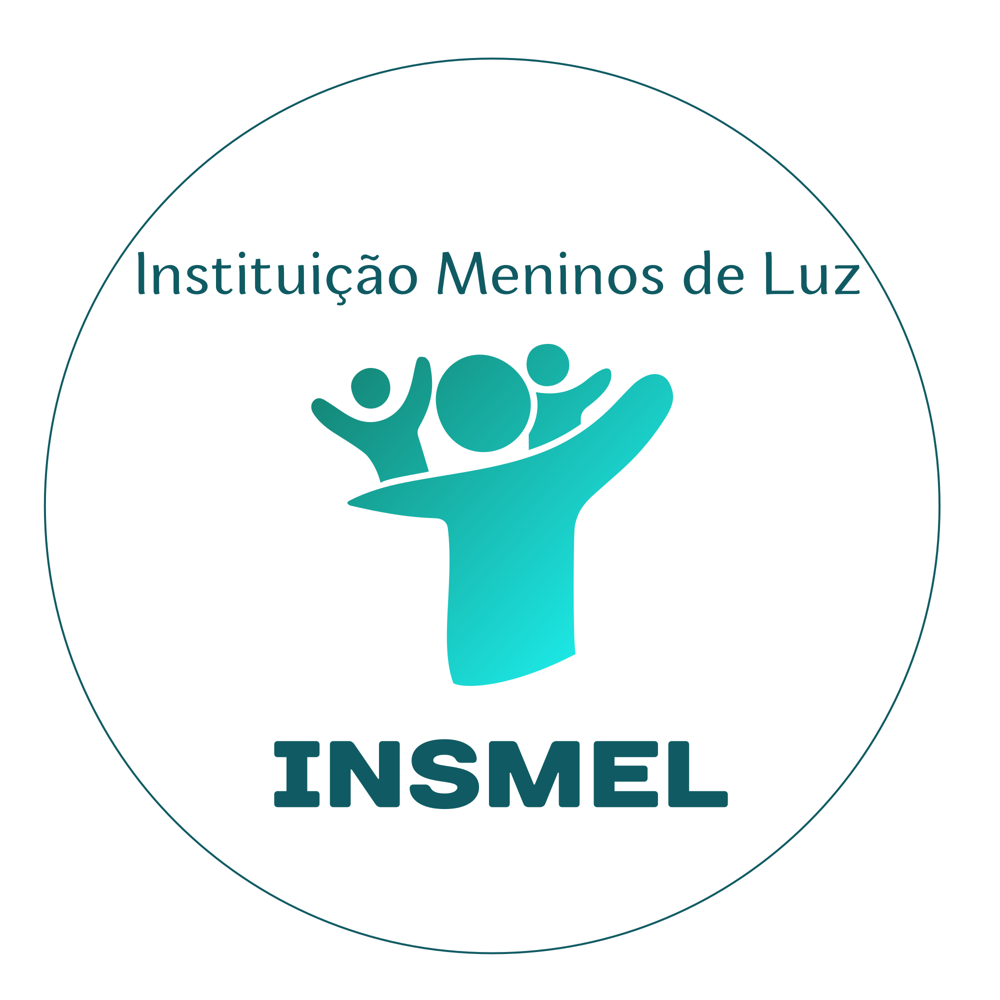

INSMELTransformando vidas através da saúde, assistência social e educação.
Uma OSC comprometida com o interesse público
O INSMEL é uma Organização da Sociedade Civil sem fins lucrativos, fundada em 08 de maio de 2012, voltada à promoção da saúde, assistência social, educação, qualificação profissional e desenvolvimento humano. Consolidou-se como instituição de referência na execução de políticas públicas, oferecendo soluções completas para municípios, estados, empresas e parceiros institucionais — com atuação pautada pela ética, transparência, eficiência administrativa e compromisso com resultados sociais.
Promover a transformação social e a dignidade humana, através de ações integradas de assistência social, saúde e educação, focando no fortalecimento de vínculos familiares e comunitários, promovendo a cidadania e autonomia de pessoas em situação de vulnerabilidade.
Ser reconhecido nacionalmente como referência em inovação e excelência na promoção dos direitos sociais, garantindo impacto positivo e sustentável na vida das comunidades atendidas.
Soluções completas para municípios, estados, empresas e parceiros institucionais
Consultas especializadas, saúde da mulher e do homem, saúde mental, oftalmologia, exames laboratoriais e por imagem, programas de prevenção e educação em saúde.
Atendimento social, benefícios eventuais, cadastro e acompanhamento familiar, inclusão produtiva, segurança alimentar e apoio à população vulnerável.
Cursos profissionalizantes, inclusão digital, marketing digital, empreendedorismo, oficinas culturais e formação continuada.
Mais de 13 anos de atuação, com prestação de contas mensal e conformidade legal integral
Fale com o INSMEL
Instituição Meninos de Luz — INSMEL
CNPJ: 15.809.340/0001-35
Avenida Desembargador Gustavo Paiva, nº 3506, Sala 721
Bairro Mangabeiras — Maceió/AL
CEP 57037-285